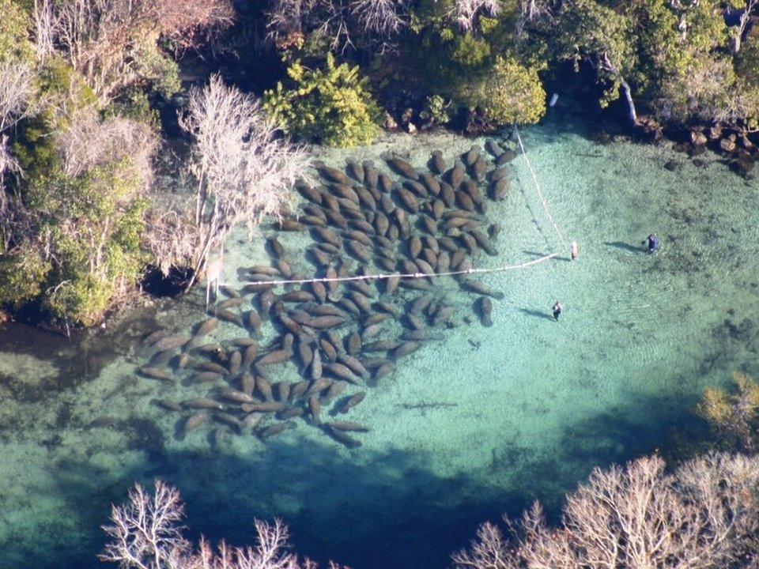

Kings Bay · Resort
Plantation on Crystal River
A waterfront resort with golf and an on-site dive shop.
Official details for Plantation on Crystal RiverSwim with manatees.
Every winter hundreds of manatees crowd into the warm springs of Kings Bay at Crystal River, the only place in the country where you can legally swim with them. Land at Crystal River Airport, stay at the Plantation on Crystal River, take an early-morning snorkel tour, walk the boardwalk at Three Sisters Springs, visit Homosassa Springs, and have dinner downtown at Vintage on 5th.

Time illustration: direct distance at 150 KTAS plus 15 minutes for departure and arrival, matching the discovery page. Use ForeFlight for your actual flight plan.
Check the weekend weather at both ends → Flight category, your minimums and the crosswind on the best runway.
KCGC, Crystal River/Captain Tom Davis Field, is a non-towered airport at 9 feet with a 4,557-foot main runway, a few minutes from Kings Bay.
Crystal River Airport, Crystal River, FL
Glider operations within 25 nm. Morning fog in winter. No live fuel price is shown.
Florida Gulf Coast flying: daily summer thunderstorms from June to September, morning fog in winter, sea breezes, and hurricanes from June to November. About 340 nm from Myrtle Beach.
Rates and availability need travel dates. Manatee season fills up fast.
A waterfront resort with golf and an on-site dive shop.
Official details for Plantation on Crystal RiverWaterfront rooms with a tiki bar, dive center and manatee tours; renovations under way, so ask.
Official details for Port Hotel & MarinaHotels and rentals.
Discover Crystal River for More places to stayPrices and availability for your dates, through our partner Stay22. This is an affiliate link: we may earn a commission at no cost to you. The picks above are never paid.
Reserve weekend dinners.
A downtown favorite in historic Crystal River.
Official details for Vintage on 5thSeafood with marina views on Kings Bay.
Official details for The Waterfront SocialWaterfront food and drinks at the Port Hotel & Marina.
Official details for Margarita BreezeCajun-style seafood in town.
Discover Crystal River for Seafood Seller & CafeSeafood and waterfront spots.
Discover Crystal River for More restaurantsGo early; manatees are most active in the cool mornings.
An underwater observatory and native wildlife.
Discover Crystal RiverThis prototype links to the local visitor site. It does not yet match events to your travel dates.
The best time to see manatees.
U.S. Fish & Wildlife Service for Manatee seasonA festival downtown.
Discover Crystal River for Florida Manatee FestivalSnorkel for bay scallops.
Discover Crystal River for Scalloping seasonCheck the local calendar when choosing a weekend, and confirm dates and tickets with the organizer.
A sample manatee weekend. No bookings or availability confirmed.
Land at KCGC mid-morning.
Lunch in town.
A short walk, then back to the airport.
Land at KCGC, subject to weather, density altitude and your actual flight plan.
Three Sisters Springs boardwalk.
Dinner at Vintage on 5th.
An early manatee snorkel tour.
Homosassa Springs.
Dinner at the resort.
Kayak Kings Bay.
Compute takeoff performance and allow time at the FBO.
Summer storms build by afternoon; leave in the morning.
The main sight.
Explore.
Dinner in town.
This guide is part of a multi-stop flying trip. Set your dates and aircraft, then swap stops to make it your own.
These details make the difference between an appealing list and a usable getaway.
Lodging and a tour.
About 340 nm from Myrtle Beach: an easy morning.
Passive observation only; follow the guides.
November to March.
Picks and links reviewed by WingAway Weekends. Hours, prices, menus and availability change often, so confirm directly with each place before booking. Spotted something out of date, or have a favorite we missed? Email us at hello@wingawayweekends.com.
WingAway Weekends helps you discover the destination. Use ForeFlight and current official aviation information for route, performance, weather, NOTAMs and preflight decisions. Flight planning and PIC responsibility stay with the pilot.